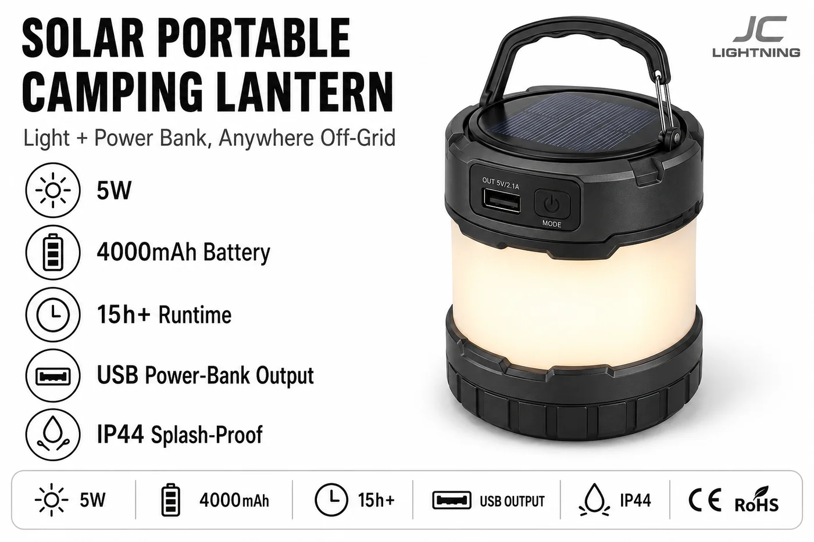

太阳能便携露营灯
用于露营、离网家庭和应急的即拿即走提灯——5W、4000mAh 电池提供 15+ 小时照明,还带 USB 输出可给手机充电。

这是系列里最百搭的产品,也是零售好卖品。它是露营的提灯、停电的备用光、给手机充电的 USB 移动电源——4000mAh 电池提供 15+ 小时照明,可由太阳或 USB 充电。轻便、IP44,可塞进背包,也能作为应急储备品摆上货架。
规格参数
| 功率 | 5W |
|---|---|
| 电池 | 4000mAh |
| 续航时间 | 每次充电 15h+ |
| 附加 | USB 输出(移动电源) |
| IP 防护等级 | IP44 |
| 充电 | 太阳能 + USB |
| 认证 | CE + RoHS |
| 定制 | OEM / ODM——包装、品牌 |
为什么选它
三用,一个 SKU。露营灯、停电备用与移动电源——受众广、易陈列。
15+ 小时续航。4000mAh 电芯带来真正的通宵照明。
应急储备品。任何会停电的地方都常备的应急 SKU。停电备货指南 →
已认证、支持 OEM。每份报价附 CE + RoHS;可定制包装与品牌。
为这些市场而建全球户外、露营与应急储备零售——以及非洲和拉美的离网家庭。